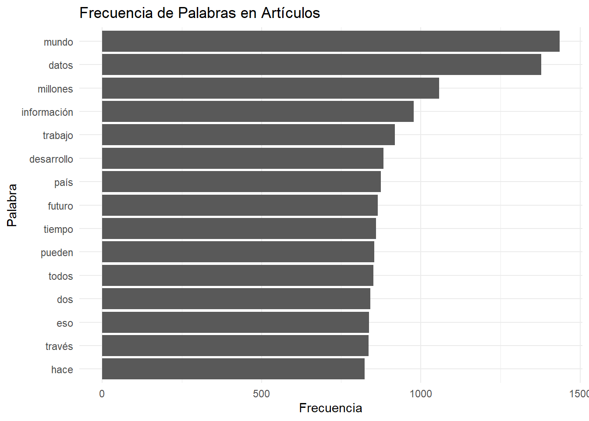

#Cargamos libreria
library(pacman)
p_load(
tidyverse,
httr,
jsonlite,
dplyr,
tidytext,
ggplot2,
rvest,
stringr,
xml2,
wordcloud2
)
rm(list = ls()) Tarea 1: scrapping
Por Hacer:
Cambiar la iteración para que extraiga la cantidad de resultados en vez de uno que uno establezca de antes
Explorar los modelos de 1. pregunta y 2. análisis de texto, y probar los análisis de sentimiento con los párrafos generados
Arreglar la entrega de Opazo, unidad de análisis Technological Frame
Limpiar las listas de párrafos sobre Inteligencia Artificial
Primer trabajo metodos computacionales
Integrantes: Ismael Aguayo y Exequiel Trujillo
Relevancia de los datos
El uso de técnicas de extracción de datos por medio de APIs permite obtener grandes volúmenes de información de fuentes digitales, lo cual es particularmente valioso para las ciencias sociales, que tradicionalmente se han basado en encuestas y censos que pueden ser más costosos y limitados en tiempo y alcance.
Las técnicas de web scraping permiten explorar temas actuales y en constante cambio (mientras se publican contenidos nuevos a diario). Quienes hacen investigación en ciencias sociales necesitan adaptarse a entornos digitales dinámicos. A través de este proyecto se espera aprender a integrar y desarrollar herramientas computacionales en la recolección y análisis de datos.
La relevancia sociológica de los datos que se utilizarán se sostiene, en principio, en el elemento revolucionario y transformador que presenta una tecnología como la IA. Segundo, la utilización de medios masivos de comunicación como BíoBíocl y Emol, ambos los medios online más visitados en el país. Esto vinculado con el gran volumen de datos que se está utilizando, otorga validez y significancia a los análisis sociales que se van a realizar. Como se demostró en la introducción, la IA ha permeado el trabajo académico en muchos ámbitos, siendo de los más visitados entre estos desde la sociología, la educación y el trabajo. Sin embargo, se percibe una vacío académico en análisis constructivistas que perciban la tecnología no solo como un objeto técnico, sino uno imbricado socialmente con significados, prácticas, y con un gran impacto en la cultura; uno construido en un proceso simultáneamente técnico como social. En los medios, esta construcción es evidente, y tiene un impacto mayor en los significados construidos por los individuos tanto por su masividad como por su posición privilegiada en la sociedad como emisor de información con validez.
Contexto BíoBío y Emol
Para este proyecto, decidimos trabajar con Emol y Bío Bío, dos de los medios de noticias más conocidos en Chile y que tienen un gran impacto en cómo la gente entiende lo que pasa en el país. Nos interesa especialmente porque ambos cubren temas de política, economía, sociedad, tecnología y cultura, en particular sobre Inteligencia Artificial, lo que nos ayuda a explorar cómo se presentan y enmarcan temas importantes o de impacto como este.
Emol es parte del grupo El Mercurio, uno de los conglomerados de medios más grandes de Chile. Este medio tiene una fuerte influencia en la opinión pública y su contenido se enfoca mucho en temas económicos, políticos y empresariales. Creemos que analizar artículos de Emol nos permite ver cómo se representan ciertos sectores de la sociedad y observar el tipo de lenguaje que usan en temas sensibles o de alto interés para la gente. El medio de comunicación El Mercurio On-Line (Emol) es parte de la empresa El Mercurio S.A.P., siendo su portal digital de noticias. Nació a mediados de los 90s con el objetivo de informar a las empresas en economía y actualidad, sin embargo, debido a la competencia de La Tercera online y Terra, se convirtió en lo que es hoy, publicando el contenido de El Mercurio, La segunda y Las Últimas Noticias (Wikipedia, 2024).
Por otro lado, Bío Bío tiene un enfoque más amplio y diverso, pero sigue siendo uno de los medios más consumidos en Chile. El medio BíoBío.cl, del que se extraerán los datos del presente estudio, data de 1959. En principio era una radio, siendo la única con sede fuera de la capital. Para el año 2009 se creó la página web que se utilizará, la cual en 2020 es la página web de noticias más visitada del país, con 122 millones de usuarios únicos y 595 millones de visitas (Quiénes somos | BioBiochile, s. f.).
Ambos medios son los más visitados digitalmente en el país, estando en las posiciones primera (Emol) y segunda (BioBiocl), según el sitio web de rankings SimilarWeb (Septiembre de 2024).
Obtenemos el texto de las noticias con la búsqueda “Inteligencia Artificial” en medio Bío Bío
Se utilizó la API de búsqueda que utiliza la web de BíoBío.cl. Esta no cuenta con documentación, por lo que a prueba y error se fueron descubriendo los parámetros necesarios para automatizar el scrappeo del contenido de la web. Los headers que se utilizaron son los mismos que arroja el get cuando uno realiza una busqueda desde el navegador.
## Parámetros básicos
search_query <- "Inteligencia Artificial" # Frase a buscar
offset <- 0 # En 0 para que comience por el primer artículo, así funciona la API
# Numero de búsquedas total al ingresar la palabra clave en bíobío.cl (la API busca en múltiplos de a 20)
total_results <- 2060
all_data <- data.frame() # Creamos data.frame vacío para luego extraer los datos de la API
# Encabezados para la solicitud
headers <- c(
`User-Agent` = "Mozilla/5.0 (Windows NT 10.0; Win64; x64; rv:131.0) Gecko/20100101 Firefox/131.0",
`Accept` = "application/json, text/plain, */*",
`Referer` = "https://www.biobiochile.cl/buscador.shtml?s=inteligencia+artificial",
`Content-Type` = "application/json; charset=UTF-8"
)
## Iteramos hasta que el offset sea menor al total de resultados
while (offset < total_results) {
# Construimos el link para cada iteración
url <- paste0(
"https://www.biobiochile.cl/lista/api/buscador?offset=", offset,
"&search=", URLencode(search_query),
"&intervalo=&orden=ultimas"
)
# Se aumenta el offset para cada iteración (después de construido el link)
offset <- offset + 20
# Realizamos la solicitud y manejamos posibles errores
response <- tryCatch(
{ GET(url) },
error = function(e) {
message("Error en la conexión: ", e)
return(NULL)
}
)
# Verificamos si `response` es nulo antes de continuar
if (is.null(response)) next
# Procesamos el contenido si `response` no es nulo
data <- content(response, "text", encoding = "UTF-8")
json_data <- fromJSON(data, flatten = TRUE)
# Verificamos que el elemento `notas` existe antes de unir datos
if (!is.null(json_data$notas)) {
json_notas <- json_data$notas %>%
# Convertimos a data frame y normalizar tipos
as.data.frame(stringsAsFactors = FALSE) %>%
# Convertir columnas enteras a character, si es necesario
mutate(across(where(is.integer), as.character))
# Unimos los datos al data frame previamente realizado
all_data <- bind_rows(all_data, json_notas)
}
cat(" - Procesados - ", offset) #Mostrar progreso
} - Procesados - 20 - Procesados - 40 - Procesados - 60 - Procesados - 80 - Procesados - 100 - Procesados - 120 - Procesados - 140 - Procesados - 160 - Procesados - 180 - Procesados - 200 - Procesados - 220 - Procesados - 240 - Procesados - 260 - Procesados - 280 - Procesados - 300 - Procesados - 320 - Procesados - 340 - Procesados - 360 - Procesados - 380 - Procesados - 400 - Procesados - 420 - Procesados - 440 - Procesados - 460 - Procesados - 480 - Procesados - 500 - Procesados - 520 - Procesados - 540 - Procesados - 560 - Procesados - 580 - Procesados - 600 - Procesados - 620 - Procesados - 640 - Procesados - 660 - Procesados - 680 - Procesados - 700 - Procesados - 720 - Procesados - 740 - Procesados - 760 - Procesados - 780 - Procesados - 800 - Procesados - 820 - Procesados - 840 - Procesados - 860 - Procesados - 880 - Procesados - 900 - Procesados - 920 - Procesados - 940 - Procesados - 960 - Procesados - 980 - Procesados - 1000 - Procesados - 1020 - Procesados - 1040 - Procesados - 1060 - Procesados - 1080 - Procesados - 1100 - Procesados - 1120 - Procesados - 1140 - Procesados - 1160 - Procesados - 1180 - Procesados - 1200 - Procesados - 1220 - Procesados - 1240 - Procesados - 1260 - Procesados - 1280 - Procesados - 1300 - Procesados - 1320 - Procesados - 1340 - Procesados - 1360 - Procesados - 1380 - Procesados - 1400 - Procesados - 1420 - Procesados - 1440 - Procesados - 1460 - Procesados - 1480 - Procesados - 1500 - Procesados - 1520 - Procesados - 1540 - Procesados - 1560 - Procesados - 1580 - Procesados - 1600 - Procesados - 1620 - Procesados - 1640 - Procesados - 1660 - Procesados - 1680 - Procesados - 1700 - Procesados - 1720 - Procesados - 1740 - Procesados - 1760 - Procesados - 1780 - Procesados - 1800 - Procesados - 1820 - Procesados - 1840 - Procesados - 1860 - Procesados - 1880 - Procesados - 1900 - Procesados - 1920 - Procesados - 1940 - Procesados - 1960 - Procesados - 1980 - Procesados - 2000 - Procesados - 2020 - Procesados - 2040 - Procesados - 2060sum(is.na(all_data$post_title))[1] 0print(all_data$post_content[1]) #Ejemplo de cómo nos queda el contenido de la página[1] "<p>Un grupo internacional de astrónomos, liderado por Lorena Hernández-García, astrofísica española que trabaja en Chile como parte del Instituto Milenio de Astrofísica (MAS) y del Núcleo Milenio TITANS, <strong>descubrieron un par de agujeros negros “monstruosos” que estarían perturbando una nube de gas en el centro de una galaxia</strong>.</p>\n<p>Este hallazgo, <strong>fue posible gracias a observaciones del Observatorio Neil Gehrels Swift, de la NASA</strong>. La agencia espacial publicó el hallazgo en su blog.</p>\n<p>En concreto, observaron por primera vez la señal de un par de agujeros negros que catalogaron como monstruosos. Estos estarían en el centro de una galaxia generando perturbaciones a una nube de gas, se trata de un hecho inusual.</p>\n<p>“<strong>Es un evento muy extraño</strong>, llamado AT 2021hdr, el cual vemos aumentar su brillo cada pocos meses”, dijo Lorena Hernández-García <a href=\"https://science.nasa.gov/missions/swift/nasas-swift-studies-gas-churning-monster-black-holes/\" rel=\"noopener\" target=\"_blank\">en el comunicado de la NASA</a>. </p>\n<div class=\"lee-tambien-bbcl\">\n\t<div class=\"lee-tambien-titulo\">Lee también...</div>\n\t<div class=\"lee-tambien-caja\">\n\t\t<a href=\"https://www.biobiochile.cl/noticias/ciencia-y-tecnologia/astronomia/2024/11/14/astronomo-chileno-descubrio-como-medir-la-edad-de-uno-de-los-objetos-mas-antiguos-del-universo.shtml\" aria-label=\"lee también\">\n\t\t\t<div class=\"lee-tambien-img lazy\" style=\"background-image: url(https://media.biobiochile.cl/wp-content/uploads/2024/11/nicolas-cristi-cambiaso-320x190.jpg);\"></div>\n\t\t</a>\n\t\t<a href=\"https://www.biobiochile.cl/noticias/ciencia-y-tecnologia/astronomia/2024/11/14/astronomo-chileno-descubrio-como-medir-la-edad-de-uno-de-los-objetos-mas-antiguos-del-universo.shtml\" aria-label=\"titulo de nota lee tambien\" class=\"lee-tambien-titular\">Astrónomo chileno descubrió cómo medir la edad de uno de los objetos más antiguos del Universo</a>\n\t\t<span style=\"display: none\">Jueves 14 Noviembre, 2024 | 11:29</span>\n\t</div>\n</div>\n<p>“Creemos que <strong>una nube de gas envolvió a los agujeros negros</strong>. A medida que orbitan uno alrededor del otro, los agujeros negros interactúan con la nube, perturbando y consumiendo su gas. Esto produce un patrón oscilante en la luz que emite el sistema”.</p>\n<p>El artículo sobre AT 2021hdr, bajo autoría principal de Hernández-García, acaba de ser publicado en la revista <a href=\"https://www.aanda.org/10.1051/0004-6361/202451305\" rel=\"noopener\" target=\"_blank\">Astronomy and Astrophysics</a>.</p>\n<p>Este sistema binario de agujeros negros gemelos <strong>está en el centro de una galaxia llamada 2MASX J21240027+3409114</strong>, situada a mil millones de años luz de distancia en la constelación norte de Cygnus. </p>\n<p>El par está separado por unos 26 mil millones de kilómetros de distancia, lo suficientemente cerca como para que la luz solo tarde un día en viajar entre ellos. Juntos<strong> contienen 40 millones de veces la masa del Sol</strong>.</p>\n<p>El equipo científico estima que los agujeros negros completan una órbita cada 130 días y colisionarán y se fusionarán en aproximadamente 70.000 años.</p>\n<blockquote class=\"instagram-media\" data-instgrm-captioned data-instgrm-permalink=\"https://www.instagram.com/reel/DCUoy53ydD5/?utm_source=ig_embed&utm_campaign=loading\" data-instgrm-version=\"14\" style=\" background:#FFF; border:0; border-radius:3px; box-shadow:0 0 1px 0 rgba(0,0,0,0.5),0 1px 10px 0 rgba(0,0,0,0.15); margin: 1px; max-width:540px; min-width:326px; padding:0; width:99.375%; width:-webkit-calc(100% - 2px); width:calc(100% - 2px);\">\n<div style=\"padding:16px;\"> <a href=\"https://www.instagram.com/reel/DCUoy53ydD5/?utm_source=ig_embed&utm_campaign=loading\" style=\" background:#FFFFFF; line-height:0; padding:0 0; text-align:center; text-decoration:none; width:100%;\" target=\"_blank\" rel=\"noopener\"> </p>\n<div style=\" display: flex; flex-direction: row; align-items: center;\">\n<div style=\"background-color: #F4F4F4; border-radius: 50%; flex-grow: 0; height: 40px; margin-right: 14px; width: 40px;\"></div>\n<div style=\"display: flex; flex-direction: column; flex-grow: 1; justify-content: center;\">\n<div style=\" background-color: #F4F4F4; border-radius: 4px; flex-grow: 0; height: 14px; margin-bottom: 6px; width: 100px;\"></div>\n<div style=\" background-color: #F4F4F4; border-radius: 4px; flex-grow: 0; height: 14px; width: 60px;\"></div>\n</div>\n</div>\n<div style=\"padding: 19% 0;\"></div>\n<div style=\"display:block; height:50px; margin:0 auto 12px; width:50px;\"><svg width=\"50px\" height=\"50px\" viewBox=\"0 0 60 60\" version=\"1.1\" xmlns=\"https://www.w3.org/2000/svg\" xmlns:xlink=\"https://www.w3.org/1999/xlink\"><g stroke=\"none\" stroke-width=\"1\" fill=\"none\" fill-rule=\"evenodd\"><g transform=\"translate(-511.000000, -20.000000)\" fill=\"#000000\"><g><path d=\"M556.869,30.41 C554.814,30.41 553.148,32.076 553.148,34.131 C553.148,36.186 554.814,37.852 556.869,37.852 C558.924,37.852 560.59,36.186 560.59,34.131 C560.59,32.076 558.924,30.41 556.869,30.41 M541,60.657 C535.114,60.657 530.342,55.887 530.342,50 C530.342,44.114 535.114,39.342 541,39.342 C546.887,39.342 551.658,44.114 551.658,50 C551.658,55.887 546.887,60.657 541,60.657 M541,33.886 C532.1,33.886 524.886,41.1 524.886,50 C524.886,58.899 532.1,66.113 541,66.113 C549.9,66.113 557.115,58.899 557.115,50 C557.115,41.1 549.9,33.886 541,33.886 M565.378,62.101 C565.244,65.022 564.756,66.606 564.346,67.663 C563.803,69.06 563.154,70.057 562.106,71.106 C561.058,72.155 560.06,72.803 558.662,73.347 C557.607,73.757 556.021,74.244 553.102,74.378 C549.944,74.521 548.997,74.552 541,74.552 C533.003,74.552 532.056,74.521 528.898,74.378 C525.979,74.244 524.393,73.757 523.338,73.347 C521.94,72.803 520.942,72.155 519.894,71.106 C518.846,70.057 518.197,69.06 517.654,67.663 C517.244,66.606 516.755,65.022 516.623,62.101 C516.479,58.943 516.448,57.996 516.448,50 C516.448,42.003 516.479,41.056 516.623,37.899 C516.755,34.978 517.244,33.391 517.654,32.338 C518.197,30.938 518.846,29.942 519.894,28.894 C520.942,27.846 521.94,27.196 523.338,26.654 C524.393,26.244 525.979,25.756 528.898,25.623 C532.057,25.479 533.004,25.448 541,25.448 C548.997,25.448 549.943,25.479 553.102,25.623 C556.021,25.756 557.607,26.244 558.662,26.654 C560.06,27.196 561.058,27.846 562.106,28.894 C563.154,29.942 563.803,30.938 564.346,32.338 C564.756,33.391 565.244,34.978 565.378,37.899 C565.522,41.056 565.552,42.003 565.552,50 C565.552,57.996 565.522,58.943 565.378,62.101 M570.82,37.631 C570.674,34.438 570.167,32.258 569.425,30.349 C568.659,28.377 567.633,26.702 565.965,25.035 C564.297,23.368 562.623,22.342 560.652,21.575 C558.743,20.834 556.562,20.326 553.369,20.18 C550.169,20.033 549.148,20 541,20 C532.853,20 531.831,20.033 528.631,20.18 C525.438,20.326 523.257,20.834 521.349,21.575 C519.376,22.342 517.703,23.368 516.035,25.035 C514.368,26.702 513.342,28.377 512.574,30.349 C511.834,32.258 511.326,34.438 511.181,37.631 C511.035,40.831 511,41.851 511,50 C511,58.147 511.035,59.17 511.181,62.369 C511.326,65.562 511.834,67.743 512.574,69.651 C513.342,71.625 514.368,73.296 516.035,74.965 C517.703,76.634 519.376,77.658 521.349,78.425 C523.257,79.167 525.438,79.673 528.631,79.82 C531.831,79.965 532.853,80.001 541,80.001 C549.148,80.001 550.169,79.965 553.369,79.82 C556.562,79.673 558.743,79.167 560.652,78.425 C562.623,77.658 564.297,76.634 565.965,74.965 C567.633,73.296 568.659,71.625 569.425,69.651 C570.167,67.743 570.674,65.562 570.82,62.369 C570.966,59.17 571,58.147 571,50 C571,41.851 570.966,40.831 570.82,37.631\"></path></g></g></g></svg></div>\n<div style=\"padding-top: 8px;\">\n<div style=\" color:#3897f0; font-family:Arial,sans-serif; font-size:14px; font-style:normal; font-weight:550; line-height:18px;\">Ver esta publicación en Instagram</div>\n</div>\n<div style=\"padding: 12.5% 0;\"></div>\n<div style=\"display: flex; flex-direction: row; margin-bottom: 14px; align-items: center;\">\n<div>\n<div style=\"background-color: #F4F4F4; border-radius: 50%; height: 12.5px; width: 12.5px; transform: translateX(0px) translateY(7px);\"></div>\n<div style=\"background-color: #F4F4F4; height: 12.5px; transform: rotate(-45deg) translateX(3px) translateY(1px); width: 12.5px; flex-grow: 0; margin-right: 14px; margin-left: 2px;\"></div>\n<div style=\"background-color: #F4F4F4; border-radius: 50%; height: 12.5px; width: 12.5px; transform: translateX(9px) translateY(-18px);\"></div>\n</div>\n<div style=\"margin-left: 8px;\">\n<div style=\" background-color: #F4F4F4; border-radius: 50%; flex-grow: 0; height: 20px; width: 20px;\"></div>\n<div style=\" width: 0; height: 0; border-top: 2px solid transparent; border-left: 6px solid #f4f4f4; border-bottom: 2px solid transparent; transform: translateX(16px) translateY(-4px) rotate(30deg)\"></div>\n</div>\n<div style=\"margin-left: auto;\">\n<div style=\" width: 0px; border-top: 8px solid #F4F4F4; border-right: 8px solid transparent; transform: translateY(16px);\"></div>\n<div style=\" background-color: #F4F4F4; flex-grow: 0; height: 12px; width: 16px; transform: translateY(-4px);\"></div>\n<div style=\" width: 0; height: 0; border-top: 8px solid #F4F4F4; border-left: 8px solid transparent; transform: translateY(-4px) translateX(8px);\"></div>\n</div>\n</div>\n<div style=\"display: flex; flex-direction: column; flex-grow: 1; justify-content: center; margin-bottom: 24px;\">\n<div style=\" background-color: #F4F4F4; border-radius: 4px; flex-grow: 0; height: 14px; margin-bottom: 6px; width: 224px;\"></div>\n<div style=\" background-color: #F4F4F4; border-radius: 4px; flex-grow: 0; height: 14px; width: 144px;\"></div>\n</div>\n<p></a></p>\n<p style=\" color:#c9c8cd; font-family:Arial,sans-serif; font-size:14px; line-height:17px; margin-bottom:0; margin-top:8px; overflow:hidden; padding:8px 0 7px; text-align:center; text-overflow:ellipsis; white-space:nowrap;\"><a href=\"https://www.instagram.com/reel/DCUoy53ydD5/?utm_source=ig_embed&utm_campaign=loading\" style=\" color:#c9c8cd; font-family:Arial,sans-serif; font-size:14px; font-style:normal; font-weight:normal; line-height:17px; text-decoration:none;\" target=\"_blank\" rel=\"noopener\">Una publicación compartida por Inst. Milenio de Astrofísica (@astrofisicamas)</a></p>\n</div>\n</blockquote>\n<p><script async src=\"//www.instagram.com/embed.js\"></script></p>\n<h2>El sistema AT 2021hdr</h2>\n<p>AT 2021hdr fue detectado por primera vez en marzo de 2021 por el ZTF (Zwicky Transient Facility) en el Observatorio Palomar, en California. Luego,<strong> fue identificado como una fuente potencialmente interesante por el proyecto ALeRCE (Automatic Learning for the Rapid Classification of Events) en Chile</strong>. </p>\n<p>Este broker (sistema capaz de ingerir y clasificar gran volumen de alertas astronómicas combinando herramientas de inteligencia artificial y astrofísica) combina herramientas de inteligencia artificial con experticia humana para informar sobre eventos en el cielo nocturno a la comunidad astronómica, usando la gran cantidad de datos recopilados por programas de sondeo como el ZTF.</p>\n<p>“Aunque originalmente se pensó que el primer destello era una supernova, los estallidos en 2022 nos hicieron pensar en otras explicaciones”, dijo la coautora del estudio, Alejandra Muñoz-Arancibia, miembro del equipo ALeRCE y astrofísica del MAS y del Centro de Modelamiento Matemático de la Universidad de Chile (CMM). “Cada evento posterior nos ha ayudado a refinar el modelo de lo que creemos que está sucediendo en el sistema”.</p>\n<p>ZTF ha detectado estallidos de AT 2021hdr cada 60 a 90 días desde el primer destello. Hernández-García, quien también es investigadora del Instituto de Física y Astronomía de la Universidad de Valparaíso, y su equipo han estado observando la fuente con Swift desde noviembre de 2022. Swift les ayudó a determinar que el sistema produce oscilaciones en luz ultravioleta y de rayos X en las mismas escalas de tiempo que el ZTF las observa en el rango visible.</p>\n<p>Los investigadores analizaron distintos escenarios que dieran explicación a lo que mostraban los datos. Inicialmente, pensaron que la señal podría ser el subproducto de una actividad normal en el centro galáctico. Luego consideraron que un evento de disrupción de marea —la destrucción de una estrella que se acercó demasiado a uno de los agujeros negros— podría ser la causa.</p>\n<div class=\"lee-tambien-bbcl\">\n\t<div class=\"lee-tambien-titulo\">Lee también...</div>\n\t<div class=\"lee-tambien-caja\">\n\t\t<a href=\"https://www.biobiochile.cl/noticias/ciencia-y-tecnologia/ciencia/2024/11/05/jenny-blamey-investigadora-usach-lidera-mision-pionera-que-enviara-microorganismos-vivos-al-espacio.shtml\" aria-label=\"lee también\">\n\t\t\t<div class=\"lee-tambien-img lazy\" style=\"background-image: url(https://media.biobiochile.cl/wp-content/uploads/2024/11/jenny-blamey-320x190.jpg);\"></div>\n\t\t</a>\n\t\t<a href=\"https://www.biobiochile.cl/noticias/ciencia-y-tecnologia/ciencia/2024/11/05/jenny-blamey-investigadora-usach-lidera-mision-pionera-que-enviara-microorganismos-vivos-al-espacio.shtml\" aria-label=\"titulo de nota lee tambien\" class=\"lee-tambien-titular\">Jenny Blamey, investigadora Usach, lidera misión pionera que enviará microorganismos vivos al espacio</a>\n\t\t<span style=\"display: none\">Martes 05 Noviembre, 2024 | 07:00</span>\n\t</div>\n</div>\n<p>Finalmente, optaron por otra posibilidad:<strong> la disrupción de marea de una nube de gas</strong>, una que era más grande que el sistema binario de agujeros negros. Cuando la nube se encontró con ellos, la gravedad la desgarró, formando filamentos alrededor del par y la fricción comenzó a calentarla. </p>\n<p>Además, el gas se volvió particularmente denso y caliente. A medida que el sistema binario orbita, la compleja interacción de fuerzas expulsa parte del gas del sistema en cada rotación. Estas interacciones producen las fluctuaciones que Swift y ZTF observaron en forma de oscilaciones.</p>\n<h2>Más sobre los agujeros negros</h2>\n<p>Hernández-García y su equipo <strong>planean continuar las observaciones de AT 2021hdr para comprender mejor el sistema y afinar sus modelos</strong>. También están interesados en estudiar su galaxia anfitriona, la Vía Láctea, que actualmente se está fusionando con otra cercana, un evento reportado por primera vez en su artículo.</p>\n<p>“Al acercarse el 20º aniversario de Swift, es increíble ver toda la nueva ciencia que sigue ayudando a la comunidad a lograr”, dijo S. Bradley Cenko, investigador principal de Swift en el Centro de Vuelo Espacial Goddard de la NASA en Greenbelt, Maryland, Estados Unidos. “Aún hay mucho que tiene para enseñarnos sobre nuestro cosmos, el cual está en constante cambio”.</p>\n<p>Goddard gestiona la misión Swift en colaboración con Penn State, el Laboratorio Nacional de Los Álamos en Nuevo México y Northrop Grumman Space Systems en Dulles, Virginia. Otros socios incluyen la Universidad de Leicester y el Mullard Space Science Laboratory en el Reino Unido, el Observatorio Brera en Italia y la Agencia Espacial Italiana</p>\n<blockquote class=\"twitter-tweet\">\n<p lang=\"es\" dir=\"ltr\">Luego de que astrónomos detectaran estallidos en una galaxia lejana, datos de nuestro telescopio Swift y observaciones desde tierra ayudaron a hallar al probable culpable: un par de agujeros negros monstruosos que orbitan dentro de una nube de gas: <a href=\"https://t.co/88mLBRCIiQ\">https://t.co/88mLBRCIiQ</a> <a href=\"https://t.co/vkVVdp9JKX\">pic.twitter.com/vkVVdp9JKX</a></p>\n<p>— NASA en español (@NASA_es) <a href=\"https://twitter.com/NASA_es/status/1856774036002386301?ref_src=twsrc%5Etfw\">November 13, 2024</a></p></blockquote>\n<p> <script async src=\"https://platform.twitter.com/widgets.js\" charset=\"utf-8\"></script></p>\n"# Iterar sobre cada fila del data frame
for (i in seq_len(nrow(all_data))) {
# Convertir el contenido HTML en un nodo HTML
nodo_html <- read_html(all_data$post_content[i])
# Extraer los párrafos del nodo HTML
parrafos <- nodo_html %>% html_elements("p") %>% html_text2()
# Filtrar los párrafos que contienen "inteligencia artificial"
parrafos_filtrados <- parrafos[grepl("inteligencia artificial", parrafos, ignore.case = TRUE)]
# Guardar los párrafos únicos en la columna correspondiente
all_data$parrafos_filtrados[i] <- list(unique(parrafos_filtrados))
}Sacamos un data frame con las columnas que nos interesen
datos_proc <- all_data %>%
select(
post_content, ID, post_title, year, month, day, post_category_primary.name, post_category_secondary.name
)
# Después de ejecutar el bucle y extraer todos los datos
# Actualizamos "total_results" con el número total de filas en el data frame final
total_results <- nrow(datos_proc)
# Confirmación de la actualización
cat("El número total de resultados obtenidos es:", total_results, "\n")El número total de resultados obtenidos es: 2060 Limpieza de las secciones “Lee también…”, Instagram y Twitter
Aparecen algunos bloques html que ponen noticias como recomedación para leer y pueden contener las palabras “inteligencia artificial” sin que el contenido de la nota se refiera específicamente a eso. Para ello podemos usar el paquete rvest. Lo mismo haremos con los bloques que tienen publicaciones de X (ex Twitter) o de Instagram. Así, mantendremos solo el texto de la noticia y eliminaremos las noticias que se agregaron sin que sean relevantes.
Necesitamos una función que se dedique a encontrar esa parte del texto y eliminarla:
for (i in seq_len(nrow(datos_proc))){
# Convertimos el contenido a un objeto HTML para usar rvest
contenido_html <- rvest::read_html(datos_proc$post_content[[i]])
# Eliminamos los divs con la clase 'lee-tambien-bbcl'
contenido_html %>%
html_nodes("div.lee-tambien-bbcl") %>%
xml_remove()
# Eliminamos los divs de publicaciones de Instagram
contenido_html %>%
html_nodes("blockquote.instagram-media") %>%
xml_remove()
# Eliminamos los divs de publicaciones de Twitter
contenido_html %>%
html_nodes("blockquote.twitter-tweet") %>%
xml_remove()
# Convertimos el HTML limpio a texto y eliminamos cualquier "Lee también" que quede en el contenido
contenido_texto <- as.character(contenido_html)
contenido_texto <- str_replace_all(contenido_texto, regex("Lee también.*?<\\/div>", dotall = TRUE), "")
# Guardamos el contenido limpio de vuelta en el data frame
datos_proc$post_content[[i]] <- contenido_texto
#Revisamos el contenido HTML resultante (opcional)
# print(as.character(contenido_html))
}Ahora eliminamos todas las notas que no mencionen Inteligencia Artificial por lo menos una vez:
datos_proc <- datos_proc %>%
filter(grepl("inteligencia artificial", post_content, ignore.case = TRUE))
# Actualizamos "total_results" con el número total de filas en el data frame final
total_results <- nrow(datos_proc)
# Confirmación de la actualización
cat("El número total de resultados obtenidos es:", total_results, "\n")El número total de resultados obtenidos es: 1885 También podemos exportar como html para ver si desaparecieron los bloques completos
# Seteamos nombre archivo salida
out_file <- "noticia_casi.html"
# Exportamos el contenido HTML de una nota aleatoria
writeLines(as.character(datos_proc$post_content[sample(1:total_results, 1)]), con = out_file)
# Mensaje de confirmación
cat("El contenido en bruto se ha exportado a", out_file) El contenido en bruto se ha exportado a noticia_casi.htmlLimpieza de texto general
Eliminamos la parte de código que queda en el texto para convertirlo en texto plano.
# Inicializamos variables
contador <- 1
html_content <- list() # Lista para hacer nodos html
# Procesar el HTML y extraer el texto
while (contador <= total_results) {
# Convertir a nodo HTML
html_content[[contador]] <- read_html(datos_proc$post_content[[contador]])
# Extraemos y limpiamos el texto
datos_proc$post_content[[contador]] <- html_content[[contador]] %>%
html_text2() %>%
str_squish()
contador <- contador + 1
}Descriptivos de frecuencia de palabras
# Esto nos sirve sobre todo para saber si se nos coló algún bloque de código
# Seleccionamos solo la columna de texto que nos interesa
text_data <- datos_proc %>% select(post_content)
# Tokenizamos el texto y lo dividimos en palabras
words <- datos_proc %>%
unnest_tokens(word, post_content)
# Cantidad de palabras extraídas
nrow(words)[1] 1030318# Cargar palabras comunes en español
data("stop_words") # Cargar palabras comunes en inglés (desde tidytext)
stop_words_es <- tibble(word = c("el", "la", "de", "y", "en", "que", "a", "los", "con", "por", "lee", "las", "para", "se", "es", "su", "del", "una", "al", "como", "más", "lo", "este", "sus", "esta", "también", "entre", "fue", "han", "un", "sin", "sobre", "ya", "pero", "no", "muy", "si", "porque", "cuando", "desde", "todo", "son", "ha", "hay", "le", "ni", "cada", "me", "tanto", "hasta", "nos", "mi", "tus", "mis", "tengo", "tienes", "esa", "ese", "tan", "esa", "esos", "esa", "esas", "él", "ella", "ellos", "ellas", "nosotros", "vosotros", "vosotras", "ustedes", "uno", "una", "unos", "unas", "alguien", "quien", "cual", "cuales", "cualquier", "cualesquiera", "como", "donde", "cuanto", "demasiado", "poco", "menos", "casi", "algunos", "algunas", "aunque", "cuyo", "cuya", "cuyos", "cuyas", "ser", "haber", "estar", "tener", "hacer", "ir", "ver", "dar", "debe", "debido", "puede", "pues", "dicho", "hecho", "mientras", "luego", "además", "entonces", "así", "tal", "dicha", "mismo", "misma", "demás", "otro", "otra", "otros", "otras", "debería", "tendría", "podría", "menos", "cuándo", "dónde", "qué", "quién", "cuyo", "la", "lo", "las", "que", "está", "según", "esto", "inteligencia", "artificial", "ia", "tecnología", "chile", "años", "personas", "parte", "tiene", "año", "cómo", "están", "forma", "durante", "vez", "estos"))
# Filtramos las stop words del texto
words_clean <- words %>%
anti_join(stop_words, by = "word") %>%
anti_join(stop_words_es, by = "word")
# Calculamos frecuencia de palabras
word_counts <- words_clean %>%
count(word, sort = TRUE)
# Ver las 10 palabras más frecuentes
head(word_counts, 10) word n
1 mundo 1435
2 datos 1378
3 millones 1057
4 información 977
5 trabajo 919
6 desarrollo 883
7 país 874
8 futuro 865
9 tiempo 860
10 pueden 854# Graficamos las palabras más frecuentes
word_counts %>%
filter(n > 10) %>%
slice_max(n, n = 15) %>%
ggplot(aes(x = reorder(word, n), y = n)) +
geom_col() +
coord_flip() +
labs(title = "Frecuencia de Palabras en Artículos",
x = "Palabra", y = "Frecuencia") +
theme_minimal()
# Filtra solo palabras con una frecuencia mínima muy baja (ej. n > 5)
word_counts_filtered <- word_counts %>% filter(n > 5) %>% slice_max(n, n = 60)
wordcloud2(
data = word_counts_filtered,
size = 0.5, # Aumenta el tamaño general de las palabras
minSize = 0, # Asegura que todas las palabras sean visibles
gridSize = 1, # Ajusta la densidad de palabras
color = "random-dark", # Colores para las palabras
backgroundColor = "white", # Fondo blanco
shape = "circle", # Forma circular para compactar la nube
ellipticity = 1 # Elimina la elipse y fuerza un formato más centrado
)Se visualiza como luego de limpiar el texto y omitir palabras que no interesan, las palabras más utilizadas son: inteligencia, artificial, IA, tecnología y Chile. Cabe destacar la aparición alta de palabras como datos e información.
Realizar una nube de palabras
Excluir IA y otros
Realizar un vector para la búsqueda de palabras
Descriptivo cantidad de notas por meses
# Agrupamos los datos por año y mes, y contar las publicaciones
publicaciones_por_mes <- datos_proc %>%
group_by(year, month) %>%
summarise(cantidad = n(), .groups = 'drop') %>%
mutate(fecha = as.Date(paste(year, month, "01", sep = "-"))) # Crear una fecha para el eje x
# Creamos el gráfico
ggplot(publicaciones_por_mes, aes(x = fecha, y = cantidad)) +
geom_line(color = "blue", linewidth = 1) + # Línea de publicaciones
geom_point(color = "red", size = 1) + # Puntos en cada mes
geom_smooth(method = "loess", color = "green", se = FALSE, linewidth = 1) + # Curva de tendencia
labs(title = "Cantidad de Notas sobre Inteligencia Artificial Publicadas por Mes",
x = "Año",
y = "Cantidad de Notas") +
theme_minimal() +
scale_x_date(date_labels = "%Y", date_breaks = "1 year") # Mostrar solo los años en el eje x`geom_smooth()` using formula = 'y ~ x'Se visualiza un aumento exponencial de noticias que se condice con el boom de la inteligencia artificial (IA) a fines del 2022 por la salida de ChatGPT. Luego hay picos altos y bajos, sin embargo nunca se vuelve a la frecuencia antes del boom inicial. Podría ser interesante investigar las fechas de los picos altos para ver si ocurrieron hechos importantes en relación a la IA.
Descriptivo cantidad de notas por categoría
# Contamos las publicaciones por categoría
publicaciones_por_categoria <- datos_proc %>%
group_by(post_category_primary.name) %>%
summarise(cantidad = n(), .groups = 'drop') %>%
arrange(desc(cantidad))
# Filtramos para quedarnos con las 15 categorías más usadas
top_15_categorias <- publicaciones_por_categoria %>%
top_n(15, cantidad)
# Gráfico de Barras para las 15 categorías más usadas
ggplot(top_15_categorias, aes(x = reorder(post_category_primary.name, -cantidad), y = cantidad, fill = post_category_primary.name)) +
geom_bar(stat = "identity") +
labs(title = "Top 15 Categorías más Usadas en Notas",
x = "Categoría",
y = "Cantidad de Notas") +
theme_minimal() +
theme(axis.text.x = element_text(angle = 45, hjust = 1),
legend.position = "none")
Como era de esperarse, el tema más recurrente es Ciencia y Tecnología, seguido de Economía, Nacional, Artes y Cultura y Opinión.
Web-scrapping utilizando la API de Emol
Lo que sigue de aquí en adelante se encuentra incompleto, sin embargo, se consideró relevante incluirlo en la entrega para poder recibir una retroalimentación. El procedimiento es el mismo: se encontró una API no documentada que utiliza el buscador de Emol. Luego se fueron descubriendo a prueba y error los parámetros necesarios para iterar. La mayor complicación que se tuvo es que la estructura de datos que entrega la API difiere mucho en este caso. La API entrega las noticias agrupadas de diez en diez.
search_query <- "Inteligencia Artificial" # Palabra clave para obtener los artículos
from <- 0 # Seteamos en 0 para que comience por el primer artículo
total_results <- 300 # Numero de búsquedas total al ingresar la palabra clave en emol.cl
procesados <- 0
all_data_emol <- list() # Creamos lista vacía para almacenar todo el contenido (por el formato del JSON no se puede utilizar un data frame)
combine_lists <- function(...) {
combined_list <- c(...)
return(combined_list)
} #Creamos función para combinar listas
## Iteramos hasta que el from sea menor al total de resultados
while (from < total_results) {
# Construimos el link para cada iteración (lo más importante es que el from vaya aumentando)
url <- paste0(
"https://newsapi.ecn.cl/NewsApi/emol/buscador/emol,inversiones,mediosregionales,legal,campo,blogs,guioteca,elmercurio-digital,emoltv,lasegundaprint,revistalibros,mercuriodeportes?q=inteligencia%20artificial&size=10&from=", from
)
from <- from + 10 # Se aumenta el from para cada iteración (después de que se construya el link)
response <- tryCatch(
{ GET(url) },
error = function(e) {
message("Error en la conexión: ", e)
return(NULL)
}
)
if (is.null(response)) next
data1 <- content(response, "text", encoding = "UTF-8") # Transformamos el cuerpo de "response" en texto en formato UTF-8
json_data1 <- fromJSON(data1, flatten = FALSE) #Convertimos el JSON en una lista leíble en R
data2 <- list(c(json_data1[["hits"]][["hits"]][["_source"]][["texto"]]))
all_data_emol <- combine_lists(all_data_emol, data2) # Fucionamos todas las listas
procesados <- procesados +10 # Contador
print(procesados)
}[1] 10
[1] 20
[1] 30
[1] 40
[1] 50
[1] 60
[1] 70
[1] 80
[1] 90
[1] 100
[1] 110
[1] 120
[1] 130
[1] 140
[1] 150
[1] 160
[1] 170
[1] 180
[1] 190
[1] 200
[1] 210
[1] 220
[1] 230
[1] 240
[1] 250
[1] 260
[1] 270
[1] 280
[1] 290
[1] 300textos_df <- tibble(texto = unlist(all_data_emol)) #Convertimos la lista en data frameReferencias
EMOL. (2024). En Wikipedia, la enciclopedia libre.https://es.wikipedia.org/w/index.php?title=EMOL&oldid=160302426
Quiénes somos | BioBiochile. (s. f.). Recuperado 4 de noviembre de 2024, dehttps://www.biobiochile.cl/quienes-somos/
Clasificación de los principales sitios web de Editoriales de noticias y medios de comunicación en Chile en septiembre 2024. (s. f.). Similarweb. Recuperado 4 de noviembre de 2024, dehttps://www.similarweb.com/es/top-websites/chile/news-and-media/